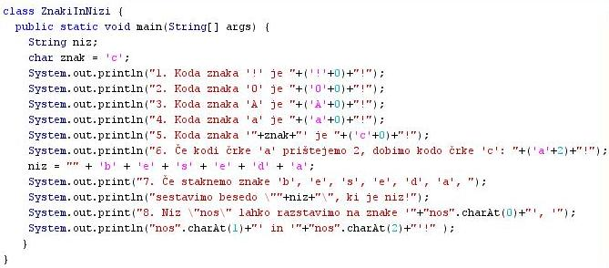
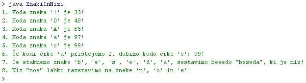

ZNAKI IN NJIHOVO RAZMERJE Z NIZI
- Splošno o znakih:
- Med znake uvršèamo vse èrke, števke in številke in posebne znake. Števke so 0, 1, 2, 3, 4, 5, 6, 7, 8 in 9.
- Znaki imajo svoj podatkovni tip, ki ga pri napovedi spremeljivk navedemo kot "char".
- "char" je krajša oblika angleške besede "character", ki med ostalim pomeni tudi "znak".
- Znaki imajo lastno kodo, zato jih lahko primerjamo po velikosti in razvršèamo v vrstnem redu, v katerem nastopajo tudi v kodnih tabelah. Primer: kodo znakov lahko izpišemo z metodo System.out.println('a'); - ta stavek izpiše kodo, ki pripada mali èrki a.
- Ker gre za kode znakov, lahko z znaki tudi raèunamo. Primer: (char)('a'+2) vrne vrednost 'c'.
- Vrednost znaka zapišemo tako, da jo obdamo z enojnim narekovajem. Primer: znak = 'a';.
- Vrednost niza zapišemo tako, da jo obdamo z dvojnim narekovajem. Primer: niz = "beseda";.
- Znak je sestav ni del niza. Niz je sestavljen iz znakov. Primer: niz "beseda" je sestavljen iz znakov 'b', 'e', 's', 'e', 'd' in 'a'.
- Znake lahko pretvorimo v nize, nize pa lahko pretvorimo v zaporedja znakov.
- Pretvorba znakov v niz:
- Znake pretvorimo v niz tako, da jih stikamo skupaj.
- Primer: znake 'b', 'e', 's', 'e', 'd' in 'a' staknemo skupaj in dobimo niz "beseda"
- Znake stikamo skupaj z operatorjem za stikanje nizov. To je znak"+".
- Primer: niz = "" + 'b' + 'e' + 's' + 'e' + 'd' + 'a';
- Pretvorba niza v zaporedje znakov:
- Niz pretvorimo v posamezne znake z metodo "niz.charAt(i)". "i" je indeks znaka, ki ga želimo izlušèiti iz niza.
- Metodo "charAt()" smo spoznali že pri nizih.
- Primer: "nos".charAt(2) vrne znak 's', saj je na tretjem mestu besede "nos" znak "s". Ne smemo pozabiti, da se preštevanje znakov zaène s številko 0 in zato je vrednost indeksa "i" na tretjem mestu enaka 2.
0 1 2
n o s
- Na enak naèin lahko izloèimo tudi ostale znake v nizu, le ustrezen indeks zapišemo kot argument metode "charAt()".
-
VAJA 11:
- V okolju za pisanje izvorne kode v jeziku Java, za prevajanje in za interaktivno delo zapiši program "ZnakiInNizi". Sledi navodilom na slikah.
- Kodo lahko tudi kopiraš iz te datoteke in jo prilepiš v okolje, v katerem pišeš programèke. Pozor: koda, ki jo boš kopiral/a, vsebuje eno, dve, tri ali štiri napake. Èe želiš, da bo program deloval, moraš napake odkriti in jih odpraviti.
- Izvorno kodo shrani pod imenom "ImePriimek11.java". ImePriimek je seveda tvoje lastno ime in priimek.
- Datoteko "ImePriimek11.java" prevedi.
- Prevedeno datoteko zaženi, preveri rezultat v interaktivnem oknu in poklièi profesorja, da vidi rezultat.
1. Vprašanja:
1. Kaj je niz in kaj je znak?
2. Zapiši v zvezek vse števke in nekaj posebnih znakov.
3. Zapiši podatkovna tipa in imeni spremenljivk, ki smo ju deklarirali v primeru v tej uèni enoti.
4. Zapiši vse znake, ki so izpisani v primeru te uène enote, in vsakemu izmed njih pripiši njihovo kodo, ki jo prav tako najdeš v izpisu.
5. Kateri od naštetih naborov znakov ima najmanjše vrednosti kode: posebni znaki, števke, velike èrke, male èrke. Pomagaj si z odgovorom na prejšnje vprašanje ali pa s stavki v izpisu program te uène enote ki imajo vrstne številke od 1 do 5.
6. Kateri od naštetih naborov znakov ima najveèje vrednosti kode: posebni znaki, števke, velike èrke, male èrke. Pomagaj si z odgovorom na prejšnje vprašanje ali pa s stavki v izpisu programa te uène enote ki imajo vrstne številke od 1 do 5.
7. Razvrsti po vrsti naštete nabore znakov glede na velikost njihove kode in tudi njihov položaj v kodni tabeli?
8. Izraèunaj, doloèi oziroma napovej vrednost kode za èrko 'b' (mali b). Zapiši jo v zvezek.
9. Zapiši metodo, s katero razstavimo niz v posamezne znake, ki ga sestavljajo.
10. Zapiši operator, s katerim lahko staknemo znake v niz.
2. Zapiši od ene do pet kljuènih besed, ki povzemajo vsebino te uène enote.
3. Povezave do dodatnih informacij.
Gradiva na spletnih straneh fakultete za matematiko in fiziko v Ljubljani.
Spletni priroènik proizvajalca programskega okolja Java. To je podjetje Sun.
|